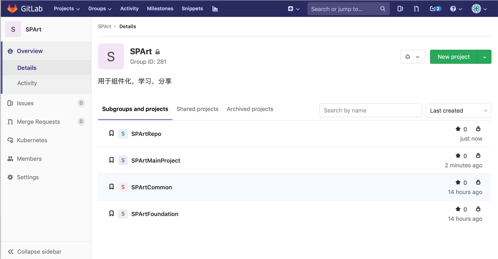
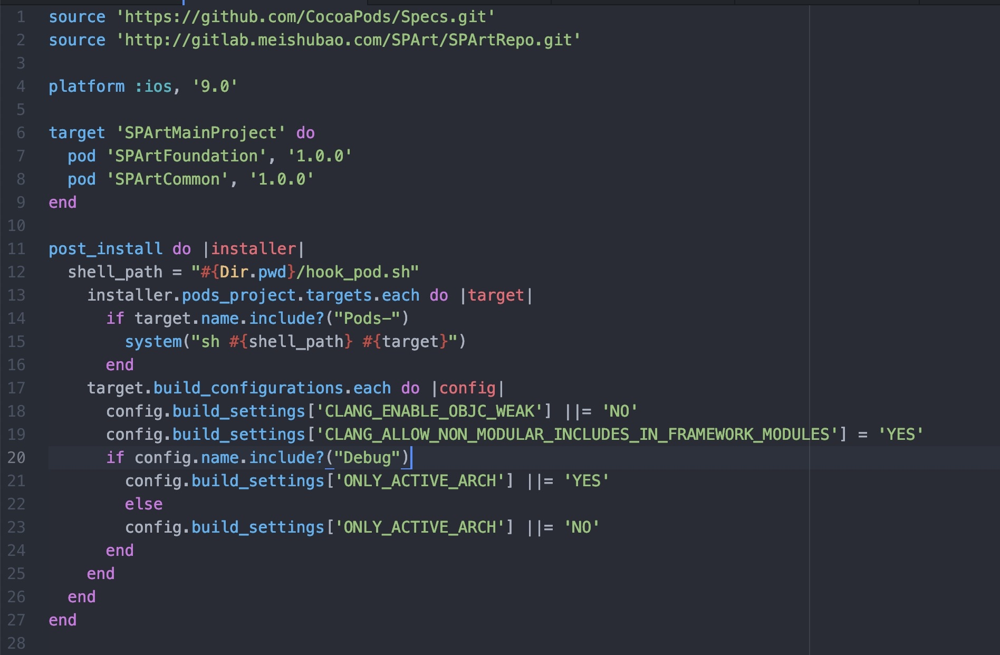
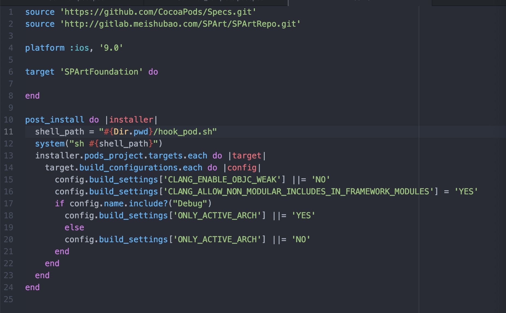
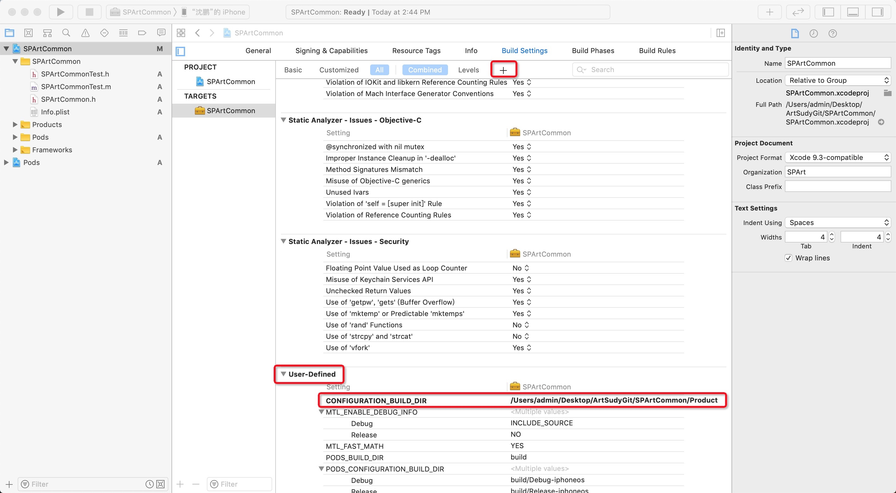
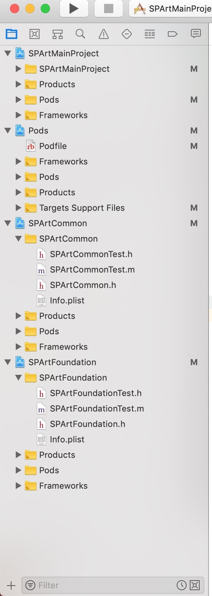
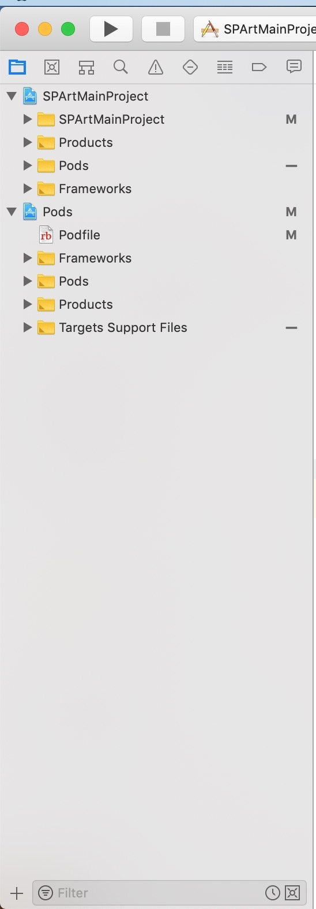

一、新建SPArt用于存储学习的各个仓库
1、准备仓库：
SPArtRepo：私有源podspec
SPArtMainProject ：测试主工程
SPArtCommon：通用层
SPArtFoundation：基础层

2、创建SPArtMainProject项目
配置podfie

3、创建Framework类型项目SPArtCommon，SPArtFoundation
3.1、配置podfile

3.2、配置最低版本号：9.0
3.3、修改Macho 为 Static Library静态库
3.4、Build Setting 中添加key：CONFIGURATION_BUILD_DIR， value：$(PROJECT_DIR)/Product（作用于后续自动化配置）

3.5、新建一个测试的.h.m（后续可删除，保证子库工程中有一个.h.m文件目的是为了保证pod install 配置文件.xcconfig配置中的 FRAMEWORK_SEARCH_PATHS= ${PODS_ROOT}/SPArtFoundation/Framework的标记，作用于后续自动化配置）
3.6、Build Phases 的Header 将 .h 放在Public Headers下
3.7、配置SPArtFoundation.podspec和SPArtCommon.podspec（各个配置项详见工程）
二进制
Fremework的项目，创建需要注意几点：
- xcode11 取消了编译路径的，修改但是 我们要这么做
CONFIGURATION_BUILD_DIR = "$(PROJECT_DIR)/Product"; - xcode 11将老工程的
CONFIGURATION_BUILD_DIR设置到了User-Define-Setting主工程build先是Pods build这个build的路径修改成$(PROJECT_DIR)/../Product目的是为了能够找到这个libPods-xx.a - 修改
Pods Pods-xxx的build product路径CONFIGURATION_BUILD_DIR$(PROJECT_DIR)/../Product
Per-configurationBuild Products Path
$(BUILD_DIR)/$(CONFIGURATION)$(EFFECTIVE_PLATFORM_NAME) $(PROJECT_DIR)/Product CONFIGURATION_BUILD_DIR = "$(PROJECT_DIR)/Product";
默认为\((BUILD_DIR)/\)(CONFIGURATION)$(EFFECTIVE_PLATFORM_NAME)
等于$(BUILT_PRODUCTS_DIR)
build
\((BUILD_DIR)/\)(CONFIGURATION)$(EFFECTIVE_PLATFORM_NAME)
$(SYMROOT)
3.8、关于SPArtRepo私有源首次拉取
1、新建私有源SPArtRepo并添加将远程私有库拉倒本地私有库便于推送 pod repo add SPArtRepo http://gitlab.meishubao.com/SPArt/SPArtRepo.git（此处的新工程不能是空的否则 还需要重新引入，第一次上传子库会有`Your configuration specifies to merge with the ref 'refs/heads/master'
from the remote, but no such ref was fetched.的报错）
或者 git clone http://gitlab.meishubao.com/SPArt/SPArtRepo.git ~/.cocoapods/repos/SPArtRepo
// git remote add origin http://gitlab.meishubao.com/SPArt/SPArtRepo.git
// git remote add upstream http://gitlab.meishubao.com/SPArt/SPArtRepo.git
二、添加自动化挂载源码开发脚本
脚本功能和使用方式方法
Shell/install.sh（主动执行） : 执行安装源码 格式为 Shell/install.sh FrameworkName1:BranchName FrameworkName2:BranchName
uninstall.sh（主动执行） :解除源码开发模式，回到二进制build的模式 格式为 ：Shell/uninstall.sh all
hook_pod.sh（关联被动执行） : 执行 Shell/install FrameworkName:BranchName过程中替换Framework Search Path 和 Header Search Path 的值 将pod install 之后链接Framework库的路径，修改成本地Framework对应路径
ggrep，gsed :命令工具
library_parent_relation：向上依赖关系
library_sub_relation ：向下依赖关系 如：SPArtCommon=SPArtFoundation 指的是SPArtCommon库 依赖SPArtFoundation
pod-config :包含的是 子库的源码地址Framework=http://gitlab.xxx.com/xxx/Framework.git 可包含多个
copy_framework_resources：解决关于源码挂载开发中，组件库中资源无法同步到项目中去，配置在主工程的Run Script中
三、示例：业务需求跟进需要扩展SPArtCommon，SPArtFoundation 中的代码，同时需要修改
-
（1）新建需求分支：
SPArtMainProject（主工程），SPArtCommon，SPArtFoundation 创建相同分支 future/newbranch名（相同名称便于区分管理） -
（2）挂载组件源码开发：
执行install 脚本，Shell/install.sh SPArtCommon:future/newbranch SPArtFoundation:future/newbranch（前后顺序影响工程中挂载组件源码的上下位置顺序，不影响依赖关系），挂载组件源码开发，挂载组件源码工程结构图与原始结构对比：

 -
（3）挂载源码开发完毕：
提交SPArtCommon，SPArtFoundation组件代码，推到对应future/newbranch分支的远程仓库 -
（4）执行uninstall.sh all 脚本：
卸载挂载模式，还原工程配置，提交主工程代码，推到对应future/newbranch的远程仓库 -
（5）通过Jenkins平台打包以及上传测试分发平台：
配置future/newbranch进行打测试包，Jenkins配置的，自动化脚本进行挂载源码打包，出包上传蒲公英平台 -
（6）如遇相应的库有bug，进行第(2)步install操作，再次进入源码挂载模式进行 bugfix，commit，push，uninstall等操作
-
（7）测试完毕，准备打appStore包前
- （7.1）修改组件版本到线上最近的版本号+需求号，（如：线上版本SPArtCommon，SPArtFoundation，组件版本1.0.1.0或者1.0.1.1（第3位为对应需求位），升级后的版本号为1.0.1.0），修改完成，推送到SPArtRepo私有源仓库中，完成组件版本迭代（可以通过脚本实现自动升级）
- （7.2）SPArtCommon，SPArtFoundation的future/newbranch分支合并到master主分支
- （7.3）将本此需求的SPArtMainProject（主工程）future/newbranch分支合并到master主分支，主工程根据需求版本自主升级版本号，修改主工程中podfile中的SPArtCommon，SPArtFoundation对应版本号，完成主工程配置迭代。（此处修改版本，以及buildversion可以通过配置脚本自动升级）
- （7.4）通过Jenkins进行master分支打线上TestFlight包配合API进行线上环境回归测试
- （7.5）测试无误，提包审核